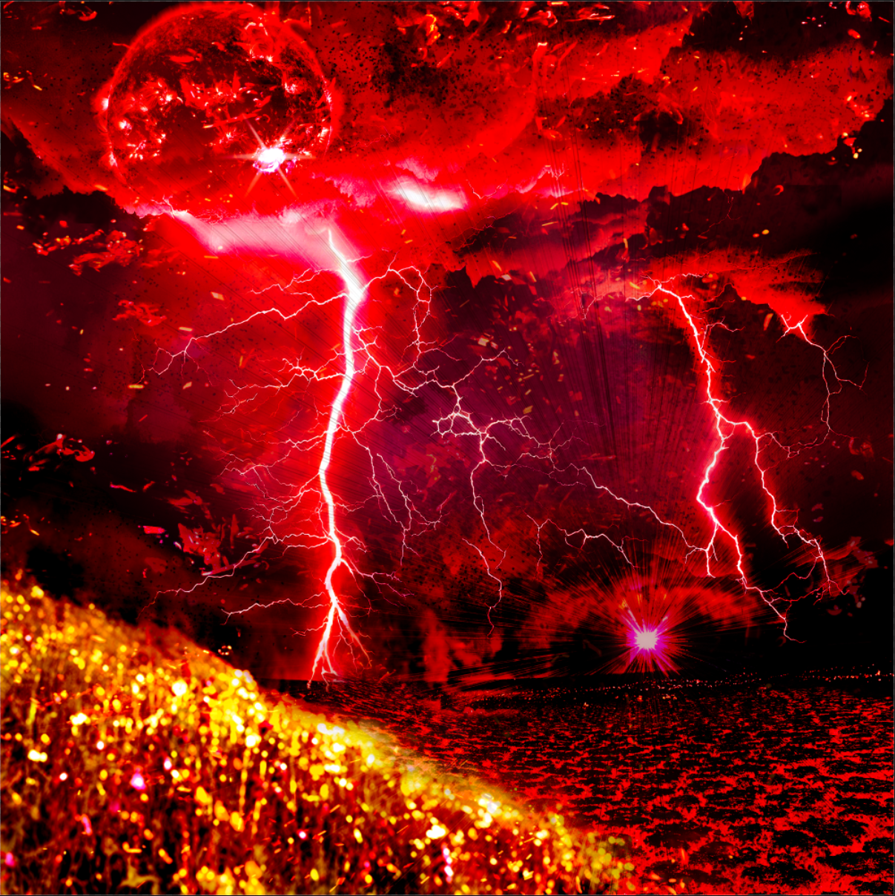

I served 5 years in the U.S. Marine Corps as a Special Intelligence Systems Administrator/Intelligence Surveillance Reconnaissance Operator working with satellite communications/networking/information security and a slew of other technologies. Upon completion of active duty, I moved on to the civilian sector working as a Storage Engineer for NetApp. After several years I became a Network-Attached Storage (NAS) Administrator for Boeing, and later a Storage Engineer at Bank of America. I now work as a Technical Account Manager for a software company dealing with active-active replication and disaster planning/recovery. Currently I am completing a Digital Media degree with a focus on game development and graphic design, granting me a unique combination of skills that set me apart as an aspiring Technical Artist.
A.S. in Digital Media - Game Development
Seminole State College of Florida
Technical Account Manager - Peer Software
Directly manage and act as escalation engineer on behalf of 10-15 medium-large companies.
Write custom scripts (Python/PowerShell, BASH) and applications (C#) to assist with integration of software/end user environment for data analytics/troubleshooting.
Maintained and assisted with migration of over 1800 storage devices to consolidate and load balance across 650 devices.
Helped modernize and optimize database collections to manage/forecast user and business group growth for capacity planning.
Capacity planning and storage provisioning to improve workflow between several departments. Storage forecasting to ensure minimal downtime, as well as disaster planning/recovery efforts.
Designing, implementing, troubleshooting, and migrating storage platforms for business continuity.
Honorable Discharge as well as maintaining a Top Secret(SCI) Clearance during service.
Team Leader during deployment to Afghanistan in support of Operation Enduring Freedom.
Communications Chief aboard 31st MEU and humanitarian aid efforts to the Philippines/South East Asia region.
Network Operations Chief while in garrison between deployments.
CompTIA Network+ Certification, CompTIA Security+ Certification.
